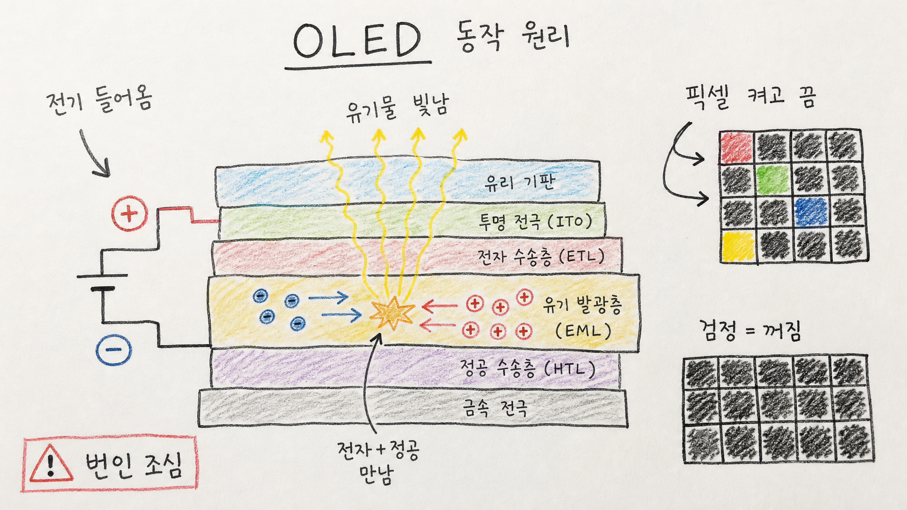

260505 OLED 동작 원리 보고서모드2

> 버전: 보고서모드2
핵심 결론
- 💡 OLED는 백라이트 없이 픽셀 자체가 빛나는 디스플레이임
- ⚡ 전자가 유기물 층에서 정공과 만나며 에너지를 빛으로 바꾸는 구조임
- ⚠️ 화질은 뛰어나지만 번인·수명·밝기 관리가 핵심 리스크임
1. OLED를 한 문장으로 이해하기
OLED는 Organic Light Emitting Diode, 즉 유기 발광 다이오드다.
쉽게 말하면 화면 뒤에서 조명을 비추는 방식이 아니라, 화면을 이루는 작은 픽셀 하나하나가 직접 빛을 내는 방식이다.
이 차이 때문에 OLED는 검정 표현, 두께, 응답 속도에서 강점을 가진다.
2. OLED의 기본 구조
OLED는 매우 얇은 여러 층이 겹쳐진 구조다.
| 층 | 역할 | 쉬운 비유 |
|---|---|---|
| 양극 | 정공을 넣는 쪽 | 빈자리 입구 |
| 정공 수송층 | 정공을 발광층으로 이동 | 길 안내 |
| 발광층 | 실제 빛이 생기는 곳 | 무대 |
| 전자 수송층 | 전자를 발광층으로 이동 | 반대편 길 안내 |
| 음극 | 전자를 넣는 쪽 | 전자 입구 |
핵심 무대는 발광층이다.
이곳에서 전자와 정공이 만나 에너지를 내고, 그 에너지가 빛으로 나온다.
3. 빛이 나는 과정
OLED의 발광 과정은 네 단계로 볼 수 있다.
- 전압을 걸어 전류를 흘린다.
- 음극에서는 전자가, 양극에서는 정공이 들어온다.
- 전자와 정공이 유기 발광층에서 만난다.
- 결합 과정에서 에너지가 빛으로 방출된다.
이 과정을 픽셀 단위로 조절하면 화면의 밝기와 색을 만들 수 있다.
4. LCD와 OLED의 결정적 차이
| 구분 | LCD | OLED |
|---|---|---|
| 빛의 원천 | 백라이트 | 픽셀 자체 발광 |
| 검정 표현 | 빛을 막아 표현 | 픽셀을 꺼서 표현 |
| 두께 | 백라이트 필요 | 더 얇게 가능 |
| 응답 속도 | 상대적으로 느림 | 빠름 |
| 리스크 | 빛샘, 명암 한계 | 번인, 수명 관리 |
OLED의 강점은 검정이다.
검정을 표현할 때 픽셀을 꺼버릴 수 있기 때문에 이론적으로 완전한 검정에 가까운 표현이 가능하다.
5. 왜 색이 나오는가
화면의 한 픽셀은 보통 빨강, 초록, 파랑 서브픽셀로 구성된다.
각 서브픽셀의 밝기를 다르게 조절하면 다양한 색을 만들 수 있다.
예를 들어 빨강과 초록을 켜면 노란색 계열이 되고, 세 색을 모두 강하게 켜면 흰색에 가까워진다.
6. OLED의 장점
OLED의 장점은 명확하다.
- 완전한 검정에 가까운 표현
- 높은 명암비
- 얇고 가벼운 패널 설계
- 빠른 응답 속도
- 넓은 시야각
- 플렉서블·폴더블 제품에 유리
그래서 스마트폰, 프리미엄 TV, 노트북, 차량용 디스플레이에서 많이 쓰인다.
7. 반대의견과 리스크
| 리스크 | 설명 | 대응 |
|---|---|---|
| 번인 | 같은 이미지가 오래 남으면 잔상이 생길 수 있음 | 픽셀 이동, 밝기 제한, UI 관리 |
| 수명 | 유기물 특성상 시간이 지나며 밝기 저하 | 소재 개선, 보정 알고리즘 |
| 밝기 | 고휘도 지속 표현에서 부담 | 발열·전력 관리 |
| 가격 | 구조와 공정 난도가 높음 | 생산 수율 개선 필요 |
OLED는 완벽한 기술이 아니다.
화질 장점이 큰 대신, 오래 같은 화면을 켜두는 환경에서는 관리가 중요하다.
최종 판단
OLED의 본질은 “픽셀 자체가 빛난다”는 점이다.
이 구조 덕분에 검정 표현, 얇은 두께, 빠른 응답 속도를 얻지만, 유기물 기반 기술이기 때문에 번인과 수명이라는 숙제도 함께 가진다.
따라서 OLED는 화질 중심 제품에 강하지만, 사용 환경과 수명 관리까지 함께 봐야 하는 디스플레이다.
Jeremy's Insight by 🤖 딸깍봇 https://blog.naver.com/jeremylee0213